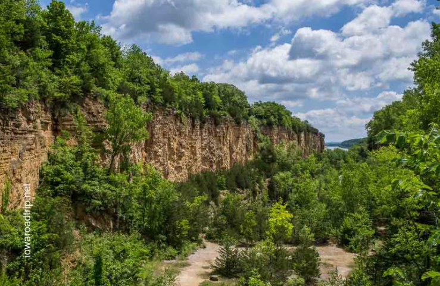
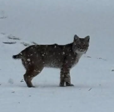
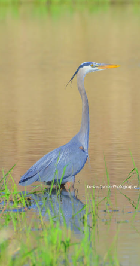
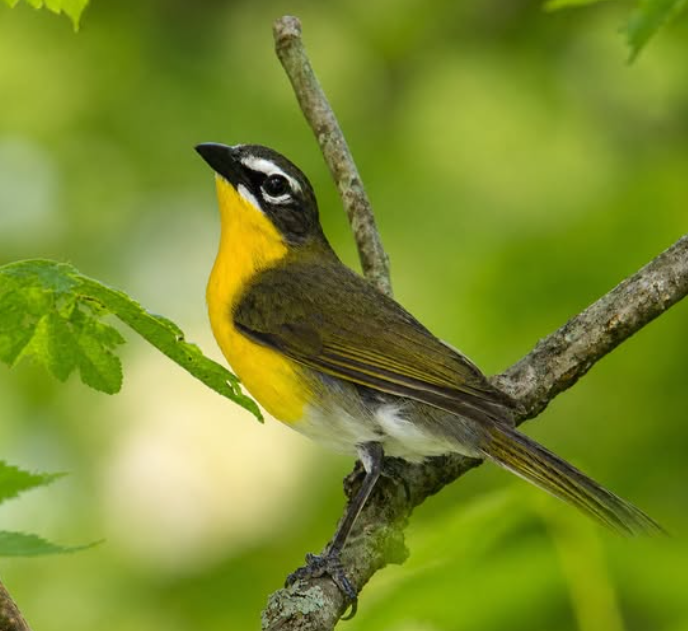

As far as wildlife goes, it's one of those spots where you never quite know what you'll run into. Deer are everywhere, especially early morning or right before dusk, and it's not unusual to spot wild turkey wandering through the underbrush.

- Bald eagles
- White-tailed deer
- Wild turkey
- Bobcats

Bald eagles hang around the river bluffs a lot, so if you're up on one of the overlooks you'll probably catch one gliding by. People who spend more time out there talk about seeing bobcats every once in a while, though that's more of a lucky sighting than something you'd count on.

The butterfly garden near the nature center draws in a ton of pollinators in the warmer months, and the birdwatchers around town treat this place like one of the best spots in the area, since the mix of woods, wetland, and prairie brings in so many different species passing through.

Best Times to Visit
- Fall, for cooler weather and the changing leaves
- Spring, when the flowers and butterflies are out
- Winter, if you're into skiing or snowy quiet trails
- Summer, when every trail is fully open and accessible